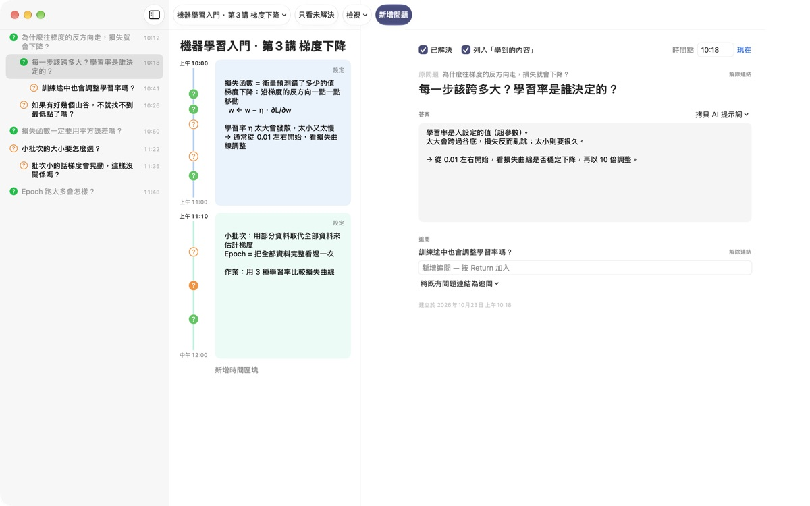
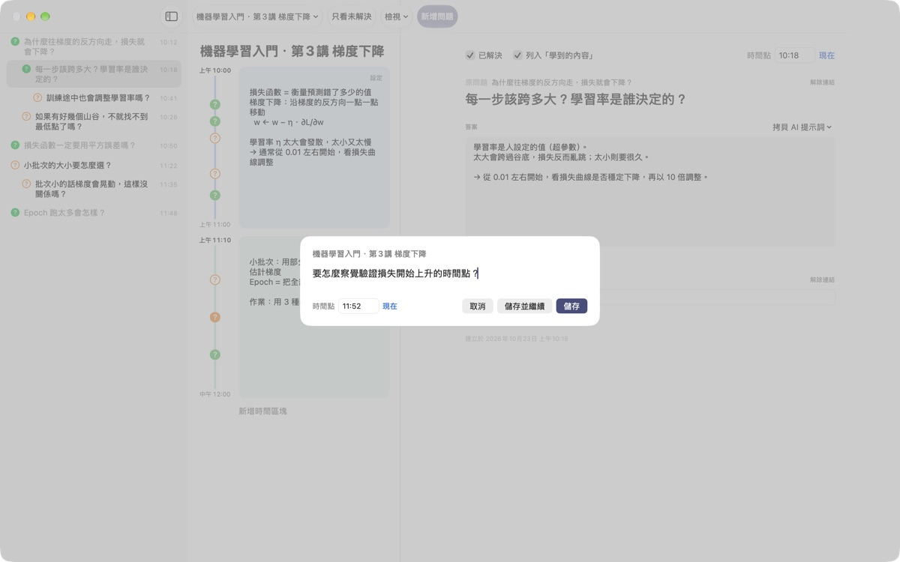
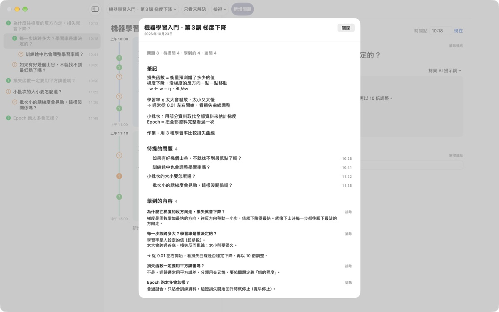
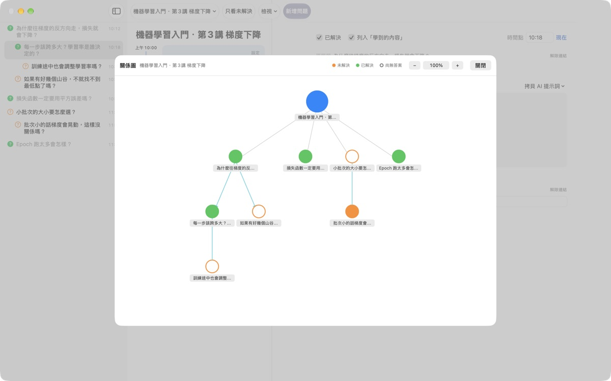

課堂上冒出的疑問，
別再讓它溜走
按下 ⌘⇧N，寫一行，問題就會留在那一分鐘的筆記旁邊。課照聽，答案之後再找。
適用於 macOS 14 或以上版本。不需帳號，資料只存在這台 Mac。

在這裡試試看
你正在上一堂機器學習課。寫下問題並儲存，對應時間的時間區塊旁就會出現 ?。把時間改到區塊之外，就會新增一個時間區塊來放它。
下課後，你還記得那個問題嗎？
才剛想到「咦，為什麼？」，老師已經講到下一頁了。隨手畫在頁邊的問號，事後想不起是哪段講解引出的，問題也就一直沒有答案。LectureQ 把每個問題和那一刻的筆記釘在一起，在你弄懂之前一直放在眼前。
不打斷上課也能提問
點工具列的 新增問題 或按 ⌘⇧N 打開輸入視窗。時間會自動填好，按 Return 儲存，按 ⌘Return 儲存後馬上寫下一題。
每個問題都會以 ? 顯示在對應的時間區塊旁，之後一眼就看得出它出自課程的哪一段。

解決的問題，變成學到的內容
用自己的話寫下答案並標為已解決，它就會出現在摘要的「學到的內容」。還沒解決的留在「待提的問題」，下堂課要問的清單自然成形。
問題詳細資訊裡的 拷貝 AI 提示詞 會把填好課程名稱和那一刻筆記的提示詞拷貝到剪貼板，貼到你常用的 AI 服務就好。

看見思路怎麼展開
從問題延伸出的追問會縮排排在原問題下方，關係圖則用箭頭連起來。點一下節點就能跳到那個問題。
也可以在學習狀態寫下上課前的自己、學完後想成為的樣子和想學的東西，前後對照。

三個步驟就能開始
- 1
新增課程
從工具列左側的課程選單新增，也可以匯入存成 Markdown 的對話。
- 2
想到就記
按
⌘⇧N，一行就夠，時間已經填好。 - 3
之後再整理答案
寫下答案，點 ? 標為已解決，就會進到「學到的內容」。
鍵盤快速鍵
- ⌘⇧N
- 新增問題
- Return
- 儲存
- ⌘Return
- 儲存並繼續寫下一題
- Esc
- 取消
- ⌘1
- 摘要：待提的問題、學到的內容、筆記
- ⌘2
- 關係圖：原問題與追問的關係
- ⌘3
- 時間區塊：所有課程的區塊依時間排列
- ⌘4
- 學習狀態
- ⌘+ · ⌘- · ⌘0
- 放大、縮小、恢復預設字級
這些都能在選單列的「檢視」選單找到。
所有功能免費
免費
- 快速提問與時間區塊筆記
- 追問與關係圖
- 摘要、時間區塊總覽與學習狀態
- 五個步驟的 AI 提示詞，一鍵拷貝
- 從 Markdown 匯入對話
支持開發者
- 覺得好用的話，可以在設定裡送一點小費
- 送小費不會解鎖額外功能
不送小費也能使用全部功能。
沒有廣告，也不用註冊。紀錄只存在這台 Mac。
常見問題
問題旁的 ? 顏色代表什麼？
列表中，橘色空心圓是還沒解決的問題，綠色實心圓是已解決的問題。點 ? 可以切換，開啟工具列的 只看未解決 就只顯示未解決的問題。時間區塊旁的 ? 用顏色表示是否已解決，實心代表已經寫了答案。
時間區塊是怎麼產生的？
點 新增時間區塊 會從此刻開始新的區塊，上一個區塊在此結束。若在不屬於任何區塊的時間記下問題，會自動建立涵蓋該時間的區塊。在區塊右上角的 設定 可以改顏色、開始時間和長度，或刪除它。手動刪除過區塊的課程，就不會再自動建立區塊。
「已解決」和「學到的內容」有什麼不同？
在問題詳細資訊勾選 已解決 後，還能選擇要不要列入「學到的內容」。那裡只會出現已解決且選擇列入的問題。在摘要裡也能移出或再放回，答案都會保留。
怎麼用 AI 找答案？
在問題詳細資訊「答案」右側的 拷貝 AI 提示詞 選一個步驟：梳理問題、尋找答案、反問答案、擷取追問、替我的答案打分數。填好課程名稱、那一刻的筆記、學習狀態和原問題的提示詞會拷貝到剪貼板。目前提示詞內文是韓文，大多數 AI 都看得懂，你可以請它用中文回答。「替我的答案打分數」需要先在答案欄用自己的話寫下內容。App 本身不會與 AI 服務連線。
可以匯入存成 Markdown 的對話嗎？
在課程選單選 從 Markdown 匯入… 並挑選檔案，就會建立新課程。# 標題 成為課程名稱，每個 ## 小節 的第一個問題是原問題，接著的問題是追問。檔案中第一個出現的說話者的發言會成為問題，其他人的發言則成為前一個問題的答案。原始檔案不會被更動。
怎麼刪除問題或課程？
在列表中對問題按右鍵，選 刪除；課程用課程選單的 刪除目前課程。刪除課程會一併刪除它的問題和區塊，而且無法復原，重要紀錄請先備份。
資料存在哪裡？要怎麼備份？
所有紀錄只存在這台 Mac，不會上傳。備份時先結束 App，再把 ~/Library/Containers/com.lectureq.LectureQ/Data/Library/Application Support/LectureQ/ 資料夾連同 -wal、-shm 檔案整個拷貝起來。App 只會傳送版本、開啟天數這類匿名使用統計，不會傳送你寫的內容。
字太小了。
⌘+ 放大，⌘- 縮小，⌘0 回到預設。可在 85% 到 200% 之間調整，設定會被記住。
哪些 Mac 可以用？
執行 macOS 14 或以上版本的 Mac 都可以。原始碼公開在 GitHub 的 M1zz/LectureQ。
遇到問題要找誰？
可以從 App 的設定（⌘,）傳送意見回饋，或寫信到下方信箱。附上 macOS 版本和發生問題時在做什麼，我們能更快確認。
有問題或建議？歡迎寫信到 mizzking75@gmail.com。